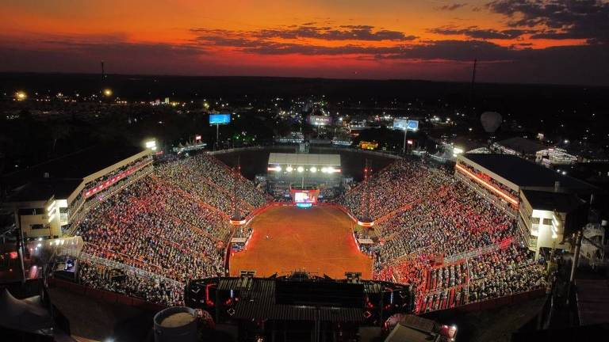

Os Estados Unidos venceram a guerra contra o México no Século 19. Ao colonizarem o sul do País, adotaram alguns costumes espanhóis, como a doma e as festas populares. Antes de mais nada, a palavra rodeio vem do verbo espanhol Rodear, que significa juntar e mudar o gado de lugar. Durante as tarefas no campo, então, os cavaleiros tinham que suportar os pulos de animais xucros e laçar novilhos para marcar e curar. Certo dia, em uma roda de amigos, alguém perguntou: quem é o melhor? E assim surgiu o primeiro rodeio, em Deer Trail, Colorado, em 1869. Em seguida, Pecos, Texas, também realizou um rodeio, em 1883. Logo depois, foi a vez de Prescott, Arizona, em 1888. A partir dai a prática se espalhou por todo o oeste americano. Até que surgiu a primeira associação em 1929: Rodeo Association of America. Hoje, são dezenas de entidades espalhadas pelo mundo.
Surge em 1947. Rodeio surge no Brasil na cidade de Barretos , onde ocorria uma quermesse em que os peões já colocavam suas habilidades em prática ao montarem em cavalos, que virou uma prova oficial em